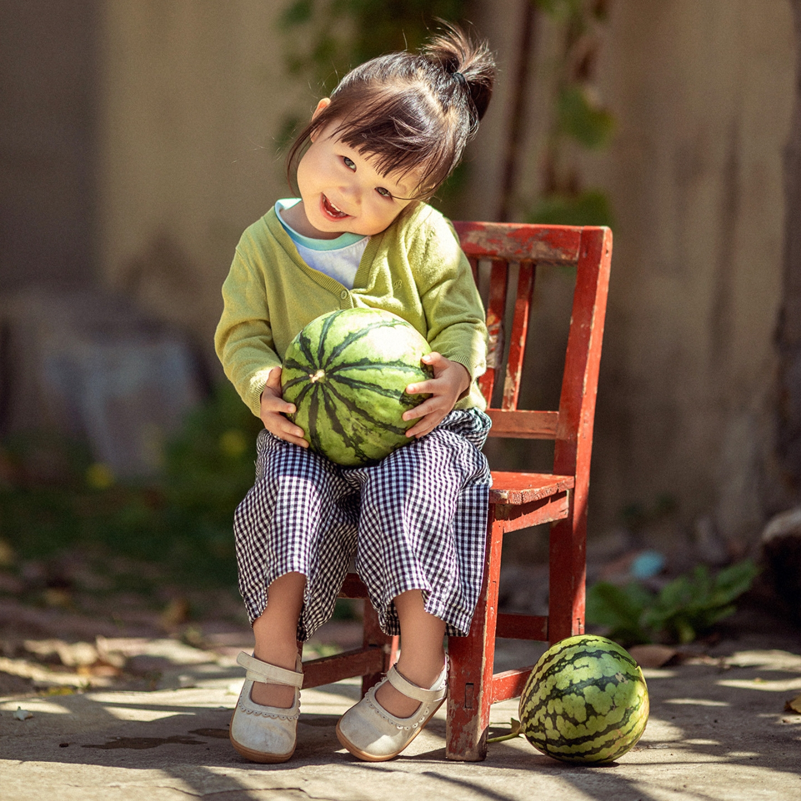

服务项目 / Service Project
- 
儿童摄影
人文纪实
鸟类摄影
关于我们 / About Us
摄影一词是源于希腊语φῶς 英：phos（光线）和 γραφι 英：graphis（绘画、绘图）或γραφή graphê，两字一起的意思是“以光线绘图”。摄影是指使用某种专门设备进行影像记录的过程，一般我们使用机械照相机或者数码照相机进行摄影。有时摄影也会被称为照相，也就是通过物体所发射或反射的光线使感光介质曝光的过程。有人说过的一句精辟的语言：摄影家的能力是把日常生活中稍纵即逝的平凡事物转化为不朽的视觉图像。
摄影是一门随着传统摄影技术的形成和发展而产生的摄影应用科学，它以摄影光学、摄影化学和电子技术为基础，在长期实践中形成了独特的拍摄体系。
一般简称的摄影，即是用照相机，映像在底片，冲印底片成为单一相片，一张张作永久保存。但相片的影像是不动、无声，仅供人观赏其人物、意境，进而体会其涵义。 今天世界上仍存留最早的一张照片可以追溯至1827年，出自法国人约瑟夫·尼埃普斯之手。

作品展示 / Work Display

资讯中心 / Information Center

中国"美丽玉溪"新天地杯旅游摄影大展
1899年，英国举办了法国印象派绘画的首次展览。绘画主义派摄影家罗宾森在其影响下，提出“软调摄影比尖锐摄影更优美”的审美标准，提倡“软调”摄影。该流派是绘画印象派在摄影艺术领域中的反映。

中国"美丽玉溪"新天地杯旅游摄影大展
1899年，英国举办了法国印象派绘画的首次展览。绘画主义派摄影家罗宾森在其影响下，提出“软调摄影比尖锐摄影更优美”的审美标准，提倡“软调”摄影。该流派是绘画印象派在摄影艺术领域中的反映。
以上图片皆为盗图,侵删请联系2721494710@qq.com